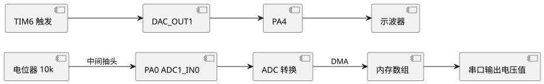

实验8 ADC采集与DAC输出
ADC (Analog-to-Digital Converter，模数转换器) 与 DAC (Digital-to-Analog Converter，数模转换器) 是连接模拟世界与数字世界的桥梁。本实验使用 STM32F407 的 12 位 ADC 采集电位器电压，并通过 DAC 输出正弦波，掌握 ADC/DAC 配置与 DMA 数据采集。完整工程源码见 /code/stm32f407/08-adc-dac/。
一、实验目的
- 掌握 STM32F407 ADC 的配置 (通道、采样时间、转换模式)。
- 掌握 DMA (Direct Memory Access，直接存储器访问) 配合 ADC 实现连续采集。
- 掌握 DAC 输出正弦波的方法。
- 理解采样定理 (Nyquist Theorem) 与分辨率、转换时间的关系。
二、知识点
- ADC 原理：逐次逼近型 (SAR) ADC，STM32F407 为 12 位，分辨率 $V_{ref}/2^{12} = 3.3/4096 \approx 0.806\text{ mV}$。
- 通道映射：PA0 = ADC1_IN0，PA1 = ADC1_IN1，温度传感器接 IN16/IN18。多个 ADC 可组成规则组 (Regular) 或注入组 (Injected)。
- 转换时间：$T_{conv} = (采样时间 + 12) \times T_{ADCCLK}$。ADCCLK 最高 36 MHz，采样时间 3 周期时 $T_{conv} = 15/36\text{M} \approx 0.42\,\mu\text{s}$。
- DMA 采集：ADC 转换完成触发 DMA，将结果自动搬移到内存数组，无需 CPU 干预，适合连续高速采集。
- DAC 输出：STM32F407 内置 2 路 12 位 DAC，PA4=DAC_OUT1, PA5=DAC_OUT2。可定时器触发输出波形。
- 正弦波查表：预先计算一个周期的正弦值存于数组，定时输出到 DAC，频率 $f = f_{trigger} / N$，N 为点数。
- 采样定理：采样频率 $f_s \geq 2 f_{max}$ 才能无失真恢复，实际工程取 5-10 倍。
三、硬件清单
| 序号 | 器材 | 规格 | 数量 | 备注 |
|---|---|---|---|---|
| 1 | STM32F407VET6 板 | — | 1 | 主平台 |
| 2 | 电位器 | 10 kΩ | 1 | 接 PA0 |
| 3 | 示波器 | — | 1 | 观察 DAC 波形 |
| 4 | 杜邦线 | — | 若干 | — |
四、电路连接
电位器两端接 +3.3V 与 GND，中间抽头接 PA0 (ADC1_IN0)；DAC_OUT1 (PA4) 接示波器探头观察波形。STM32F407 的 ADC 参考电压 Vref+ 接 +3.3V。

查看 PlantUML 源码
@startuml
skinparam defaultFontName "Microsoft YaHei"
skinparam backgroundColor #ffffff
left to right direction
component "电位器 10k" as POT
component "PA0 ADC1_IN0" as PA0
component "ADC 转换" as ADC
component "内存数组" as MEM
component "串口输出电压值" as UART
component "DAC_OUT1" as DAC
component "PA4" as PA4
component "示波器" as SCOPE
component "TIM6 触发" as TIM6
POT --> PA0 : 中间抽头
PA0 --> ADC
ADC --> MEM : DMA
MEM --> UART
DAC --> PA4
PA4 --> SCOPE
TIM6 --> DAC
@enduml五、代码框架
5.1 ADC + DMA 连续采集 PA0
工程 /code/stm32f407/08-adc-dac/adc_dma.c。
#include "stm32f4xx_hal.h"
#define ADC_BUF_LEN 16
volatile uint16_t adc_buf[ADC_BUF_LEN]; /* DMA 缓冲 */
ADC_HandleTypeDef hadc1;
DMA_HandleTypeDef hdma_adc1;
void ADC_DMA_Init(void) {
/* ADC1 时钟 + DMA2 时钟 + GPIOA 时钟 */
__HAL_RCC_ADC1_CLK_ENABLE();
__HAL_RCC_DMA2_CLK_ENABLE();
__HAL_RCC_GPIOA_CLK_ENABLE();
/* PA0 模拟输入 */
GPIO_InitTypeDef gpio = {0};
gpio.Pin = GPIO_PIN_0;
gpio.Mode = GPIO_MODE_ANALOG;
HAL_GPIO_Init(GPIOA, &gpio);
/* DMA2 Stream0 Channel0 -> ADC1 */
hdma_adc1.Instance = DMA2_Stream0;
hdma_adc1.Init.Channel = DMA_CHANNEL_0;
hdma_adc1.Init.Direction = DMA_PERIPH_TO_MEMORY;
hdma_adc1.Init.PeriphInc = DMA_PINC_DISABLE;
hdma_adc1.Init.MemInc = DMA_MINC_ENABLE; /* 内存地址自增 */
hdma_adc1.Init.PeriphDataAlignment = DMA_PDATAALIGN_HALFWORD;
hdma_adc1.Init.MemDataAlignment = DMA_MDATAALIGN_HALFWORD;
hdma_adc1.Init.Mode = DMA_CIRCULAR; /* 循环模式 */
hdma_adc1.Init.Priority = DMA_PRIORITY_HIGH;
HAL_DMA_Init(&hdma_adc1);
__HAL_LINKDMA(&hadc1, DMA_Handle, hdma_adc1);
/* ADC1 配置 */
hadc1.Instance = ADC1;
hadc1.Init.ClockPrescaler = ADC_CLOCK_SYNC_PCLK_DIV4; /* 84/4=21MHz */
hadc1.Init.Resolution = ADC_RESOLUTION_12B; /* 12 位 */
hadc1.Init.DataAlign = ADC_DATAALIGN_RIGHT;
hadc1.Init.ScanConvMode = DISABLE;
hadc1.Init.EOCSelection = ADC_EOC_SINGLE_CONV;
hadc1.Init.ContinuousConvMode = ENABLE; /* 连续转换 */
hadc1.Init.DMAContinuousRequests = ENABLE;
hadc1.Init.NbrOfConversion = 1;
HAL_ADC_Init(&hadc1);
ADC_ChannelConfTypeDef sConfig = {0};
sConfig.Channel = ADC_CHANNEL_0; /* PA0 = IN0 */
sConfig.Rank = 1;
sConfig.SamplingTime = ADC_SAMPLETIME_56CYCLES; /* 采样 56 周期 */
HAL_ADC_ConfigChannel(&hadc1, &sConfig);
HAL_ADC_Start_DMA(&hadc1, (uint32_t*)adc_buf, ADC_BUF_LEN);
}
/* 计算平均电压 (mV) */
float ADC_GetVoltage(void) {
uint32_t sum = 0;
uint16_t i;
for (i = 0; i < ADC_BUF_LEN; i++) sum += adc_buf[i];
float avg = sum / (float)ADC_BUF_LEN;
return avg * 3300.0f / 4096.0f; /* 12位, 3.3V 参考 */
}5.2 DAC 输出正弦波 (定时器触发)
工程 /code/stm32f407/08-adc-dac/dac_sine.c。TIM6 触发 DAC，每个触发输出一个查表点。
#include "stm32f4xx_hal.h"
#include <math.h>
#define SINE_POINTS 64 /* 一个周期 64 点 */
uint16_t sine_table[SINE_POINTS];
DAC_HandleTypeDef hdac;
TIM_HandleTypeDef htim6;
/* 生成正弦表: 12位, 0-4095, 偏置 2048, 幅度 2047 */
void Sine_Table_Init(void) {
uint16_t i;
for (i = 0; i < SINE_POINTS; i++) {
sine_table[i] = (uint16_t)(2048.0f + 2047.0f * sinf(2 * 3.1415926f * i / SINE_POINTS));
}
}
void DAC_Sine_Init(void) {
__HAL_RCC_DAC_CLK_ENABLE();
__HAL_RCC_GPIOA_CLK_ENABLE();
__HAL_RCC_TIM6_CLK_ENABLE();
/* PA4 模拟输出 */
GPIO_InitTypeDef gpio = {0};
gpio.Pin = GPIO_PIN_4;
gpio.Mode = GPIO_MODE_ANALOG;
HAL_GPIO_Init(GPIOA, &gpio);
/* TIM6 触发 DAC: 频率 f = 84M / ((PSC+1)(ARR+1)) / SINE_POINTS */
htim6.Instance = TIM6;
htim6.Init.Prescaler = 0; /* 不分频 84MHz */
htim6.Init.Period = 84 - 1; /* 1MHz 触发 */
htim6.Init.CounterMode = TIM_COUNTERMODE_UP;
HAL_TIM_Base_Init(&htim6);
/* DAC1 配置: 定时器触发 */
hdac.Instance = DAC;
HAL_DAC_Init(&hdac);
DAC_ChannelConfTypeDef ch = {0};
ch.DAC_Trigger = DAC_TRIGGER_T6_TRGO; /* TIM6 触发 */
ch.DAC_OutputBuffer = DAC_OUTPUTBUFFER_ENABLE;
HAL_DAC_ConfigChannel(&hdac, &ch, DAC_CHANNEL_1);
/* DMA 搬运正弦表到 DAC (略, 可用 DMA1 Stream5 Channel7) */
HAL_DAC_Start(&hdac, DAC_CHANNEL_1);
HAL_TIM_Base_Start(&htim6);
/* 正弦波频率 = 1MHz / 64 = 15.625 kHz */
}
int main(void) {
HAL_Init();
Sine_Table_Init();
DAC_Sine_Init();
ADC_DMA_Init();
while (1) {
float v = ADC_GetVoltage(); /* 采集电位器电压 */
/* 串口输出 v (mV) 略 */
HAL_Delay(100);
}
}六、调试要点
- 参考电压：ADC 测量范围 0-Vref+ (3.3V)，超过会损坏引脚；电压换算 $V = ADC值 \times 3.3 / 4096$。
- 采样时间：信号源内阻大时需更长采样时间，否则结果偏小。电位器 10 kΩ 建议 ≥ 56 周期。
- DMA 缓冲对齐：16 位数据用 HALFWORD，地址自增；若模式配错则只更新第一个值。
- 正弦波平滑度：点数越多越接近正弦，但频率越低；点数少则阶梯明显，可加 RC 低通滤波 ($f_c$ 略高于正弦频率) 平滑。
- DAC 阻抗：DAC 输出缓冲开启后驱动能力增强 (可带 kΩ 负载)；关闭缓冲时输出阻抗高，需外接运放跟随。
- 触发频率：正弦频率 = 触发频率 / 点数。TIM6 触发 1 MHz、64 点，正弦约 15.6 kHz。
七、思考题
- STM32F407 的 ADC 分辨率是多少？参考电压 3.3V 时最小可分辨电压为多少 mV？
- 什么是采样定理？为什么采样频率必须大于信号最高频率的 2 倍？
- DMA 相比中断/查询方式采集 ADC 有什么优势？什么场景必须用 DMA？
- 查表法生成正弦波的频率如何计算？如何提高正弦波的质量 (减少谐波)？
- 若用 DAC 输出音频，采样频率一般取多少？为什么？简述 PWM 替代 DAC 输出音频的原理。